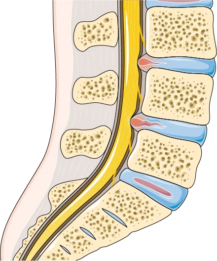

La sciatica è il dolore che dalla schiena scende lungo la gamba, perché una radice nervosa è irritata o compressa.
Migliora quasi sempre senza intervento, ma ci mette più del semplice mal di schiena: qui si ragiona in mesi, non in settimane.

Come si manifesta
- Dolore che parte dal gluteo o dalla parte bassa della schiena e scende lungo la gamba, spesso sotto il ginocchio.
- Formicolio, sensazione di punture di spillo o di gamba addormentata.
- A volte debolezza: il piede che "sbatte", difficoltà ad alzarsi sulle punte o sui talloni.
- Di solito interessa una gamba sola e peggiora stando seduti, tossendo o starnutendo.
Nella maggior parte dei casi dietro c'è un'ernia del disco, che con il tempo tende a riassorbirsi da sola. Nelle persone sopra i sessant'anni è più frequente la stenosi del canale.
Quando preoccuparsi
Vai al pronto soccorso, o chiama il 112, se compaiono
- difficoltà a trattenere o a svuotare urina o feci;
- formicolio o perdita di sensibilità nella zona dei genitali, dell'ano o dell'interno coscia;
- perdita di forza a una o a entrambe le gambe, soprattutto se peggiora di ora in ora.
Contatta il medico presto se
- la forza della gamba sta calando nei giorni, anche lentamente;
- il dolore è comparso dopo una caduta o un incidente;
- hai febbre, brividi o stai perdendo peso senza motivo;
- hai avuto un tumore in passato;
- il dolore è insopportabile nonostante i farmaci, o ti impedisce di dormire da giorni.
La perdita di forza è la cosa che conta di più. Il dolore, per quanto violento, non è di per sé un segnale di gravità.
Cosa puoi fare tu
Fai
- Continua a muoverti nei limiti di quello che il dolore permette.
- Alterna le posizioni: stare seduti a lungo è di solito la cosa peggiore.
- Cammina un po' ogni giorno, anche se all'inizio sembra impossibile.
- Per la terapia farmacologica chiedi al medico.
- Tieni presente che il tempo gioca a favore: la maggior parte delle ernie si riduce da sola.
Non fare
- Non stare fermo a letto aspettando che passi.
- Non affrettarti a fare esami diagnostici senza aver chiesto il parere del tuo medico.
- Non dare per scontato che serva l'intervento: nella maggior parte dei casi non serve.
- Se prendi antidolorifici forti da settimane, parlane con il medico.
Quanto dura
Qui va detta una cosa che spesso non si dice. Uno studio inglese ha seguito per un anno 609 persone arrivate dal medico di famiglia con dolore alla gamba: a dodici mesi circa il 55% era migliorato.[2] Poco più della metà. La sciatica è meno benigna di quanto si racconti, e vale la pena saperlo prima.
Lo stesso studio ha trovato che uno dei fattori legati a un recupero peggiore è credere che il problema durerà a lungo. Non è una questione di volontà: chi si aspetta di stare male a lungo si muove meno, e il movimento è parte della cura.
In pratica: i primi giorni sono i peggiori, nel giro di sei-otto settimane la maggior parte delle persone sta nettamente meglio, e una quota non piccola si porta dietro qualcosa più a lungo.
Serve la risonanza?
Non subito. Le linee guida inglesi dicono di non eseguire imaging di routine, e di richiederlo in ambito specialistico solo se il risultato cambia quello che si farà.[1]
Il motivo è lo stesso del mal di schiena: le immagini trovano quasi sempre qualcosa. Su 3.110 persone senza alcun sintomo, il 29% a vent'anni e il 36% a cinquanta aveva una protrusione discale.[5] Trovare un'ernia non dimostra che sia lei a fare male.
La risonanza diventa utile quando si sta valutando un intervento, o quando c'è il sospetto di una causa diversa.
Le cure, e quanto funzionano
Quello che le linee guida raccomandano[1]
- Restare attivi e un programma di esercizio, come nel mal di schiena.
- Spiegazione e rassicurazione sul decorso atteso. Non è un di più: incide sul risultato.
- Infiltrazioni con cortisone, anestetico o ossigeno-ozono. Le linee guida inglesi indicano l'epidurale con anestetico e cortisone nella sciatica acuta e severa;[1] l'ossigeno-ozono è usato nella pratica e una revisione di 15 studi randomizzati lo descrive come sicuro e utile nel breve-medio termine, su una letteratura però di qualità modesta.[4]
- Valutazione chirurgica se il dolore non si controlla o la forza cala.
Quello che le linee guida sconsigliano[1]
- Le terapie farmacologiche come unica strategia, e assunte senza il controllo del medico.
In particolare gabapentin, pregabalin, cortisone per bocca e benzodiazepine, che per il dolore alla gamba vengono prescritti spesso ma negli studi non hanno dato i risultati attesi; gli oppioidi non sono indicati nella sciatica che dura da mesi.
E l'intervento?
L'intervento si riserva ai casi in cui il trattamento conservativo non ha funzionato, oppure quando compaiono un deficit di forza o un dolore che non si riesce a controllare in alcun modo.
Sul confronto diretto con il trattamento conservativo, nella sciatica che dura da oltre tre mesi, le prove sono ancora poche: una revisione ha trovato quattro studi randomizzati, in tutto 352 persone, con risultati che cambiano a seconda di quale studio si includa.[3] È un'opzione concreta, da valutare con il proprio medico quando le altre strade sono state percorse.
Quando serve lo specialista
La visita fisiatrica serve presto, più che nel mal di schiena semplice: per capire quale radice è coinvolta, verificare che la forza sia conservata, impostare l'esercizio e decidere se e quando sia indicato un trattamento a base di infiltrazioni o una valutazione chirurgica.
Da dove vengono queste informazioni
- National Institute for Health and Care Excellence. Low back pain and sciatica in over 16s: assessment and management. NICE guideline NG59, pubblicata nel 2016, ultimo aggiornamento dicembre 2020. nice.org.uk/guidance/ng59
- Konstantinou K, Dunn KM, Ogollah R, Lewis M, van der Windt D, Hay EM. Prognosis of sciatica and back-related leg pain in primary care: the ATLAS cohort. The Spine Journal, pubblicato online nel novembre 2017. Coorte di 609 pazienti seguiti un anno.
- Hammed A, Al-Qiami A, Alsalhi H, et al. Surgical vs. conservative management of chronic sciatica (>3 months) due to lumbar disc herniation: systematic review and meta-analysis. Cureus 2024;16(5):e59617. doi:10.7759/cureus.59617
- Sconza C, Leonardi G, Kon E, Respizzi S, Massazza G, Marcacci M, Di Matteo B. Oxygen-ozone therapy for the treatment of low back pain: a systematic review of randomized controlled trials. Eur Rev Med Pharmacol Sci 2021;25(19):6034–6046. doi:10.26355/eurrev_202110_26881. Quindici studi, 2.597 pazienti.
- Brinjikji W, Luetmer PH, Comstock B, Bresnahan BW, Chen LE, Deyo RA, et al. Systematic literature review of imaging features of spinal degeneration in asymptomatic populations. AJNR Am J Neuroradiol 2015;36(4):811–816. doi:10.3174/ajnr.A4173
La metanalisi al punto 3 si basa su pochi studi e su un campione piccolo, e gli autori della revisione al punto 4 giudicano modesta la qualità dei lavori inclusi: le riportiamo perché sono le fonti disponibili, non perché siano conclusive.
Scheda aggiornata il 5 novembre 2026. Prossima revisione prevista entro novembre 2028.